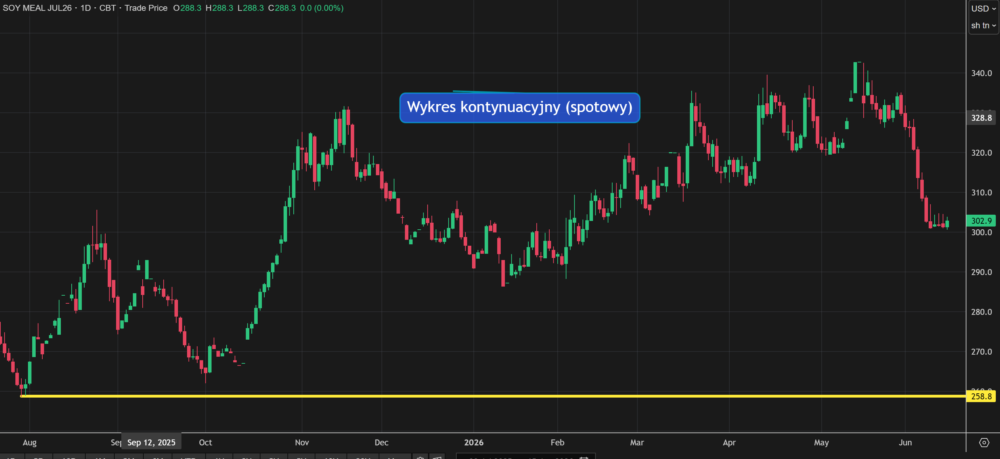
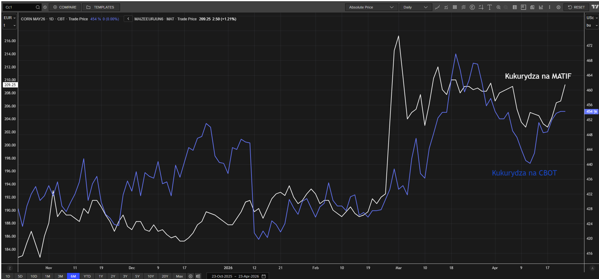
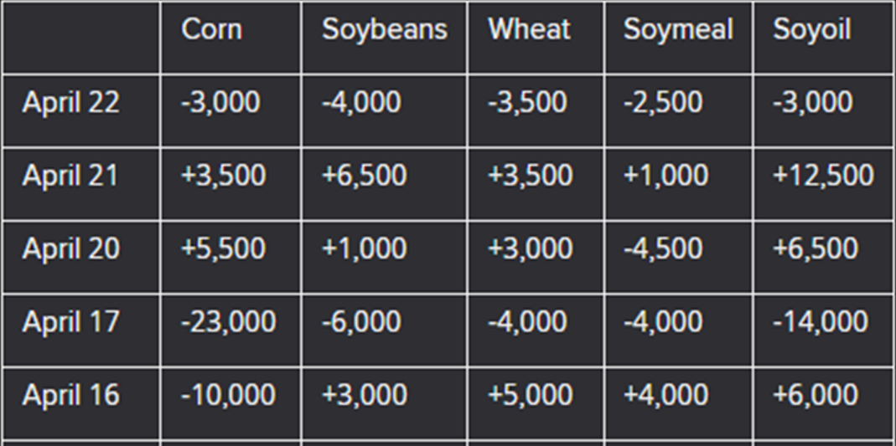
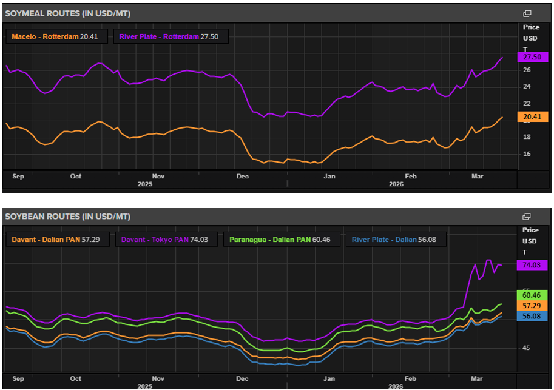
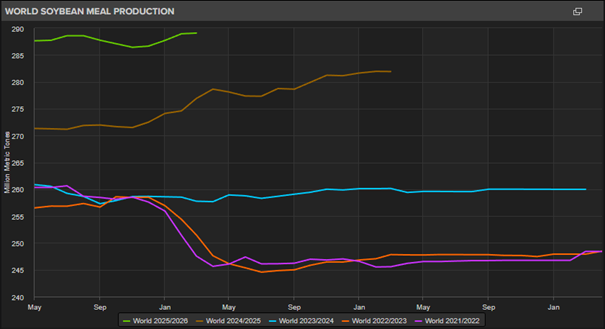

Analiza terminowa Rynku Śruty Sojowej: Anatomia Dołków z 2025 roku a Obecna Wycena Futures. Pozytywna ocena zachowania Polski
2026-06-15
Analizując obecną sytuację na rynku śruty sojowej (czerwiec 2026) nie sposób nie odnieść się do historycznych minimów, które obserwowaliśmy na przełomie września i października 2025 roku. Pobieżne spojrzenie na wykresy potrafi jednak zakrzywić rzeczywistość. Aby zrozumieć, w jak dobrym miejscu zakupowym obecnie się znajdujemy, musimy rozłożyć na czynniki pierwsze kształt ówczesnej i dzisiejszej krzywej terminowej (forward curve).

Źródło: LSEG Workspace
Spot vs. Forward: Złudzenie taniego towaru
Wykres kontynuacyjny (spotowy) jednoznacznie wskazuje, że w październiku 2025 roku rynek na CBOT zanotował wieloletnie dołki, osiągając poziom 258.8 USD/t. To ta cena najmocniej zapisała się w pamięci kupujących. Należy jednak pamiętać, że była to wycena wyłącznie dla najbliższego terminu dostawy.
Gdy w październiku 2025 roku wyceniano fizyczny towar na odległe miesiące, rynek znajdował się w bardzo stromym tzw contango (krzywa terminowa rosnąca). Różnica w cenie była drastyczna:
*Spot (październik '25): 259 USD
*Kontrakt Lipiec '26 (wyceniany w paź '25): 293 USD
*Spread wynosił aż 34 USD na tonie. Stroma krzywa rosnąca w tamtym okresie zwiastowała rynkowe oczekiwania zacieśnienia podaży w przyszłości oraz uwzględniała wysokie koszty magazynowania taniego towaru bieżącego. Dla kupujących oznaczało to psychologiczną pułapkę – widząc na ekranach 259 USD, trudno było zaakceptować fixowanie kontraktów na lato 2026 po cenach o ponad 30 dolarów wyższych.
Dziś (czerwiec 2026) struktura rynku uległa fundamentalnej zmianie. Krzywa terminowa uległa spłaszczeniu. Ceny kontraktów na lipiec, październik i grudzień 2026 oscylują na niemal identycznym poziomie w wąskim przedziale 301 - 305 USD. Płaska krzywa oznacza rynkowe status quo – brak presji na natychmiastową wyprzedaż zapasów, ale jednocześnie brak obaw o podaż w kolejnych miesiącach po zbiorach. Rynek wycenił równowagę.
Prawdziwe dno jest właśnie testowane
Powyższe wykresy poszczególnych serii kontraktów (Lipiec, Październik, Grudzień) pokazują "prawdziwe" dołki z jesieni 2025 roku dla tych konkretnych terminów dostaw. O ile spot kosztował 260-275 USD, o tyle historyczne minima dla interesujących nas dziś miesięcy wynosiły odpowiednio:
*Lipiec 2026: 293.7 USD
*Październik 2026: 297.3 USD
*Grudzień 2026: 301.4 USD
Zwróćmy uwagę, gdzie jesteśmy dzisiaj. Ostatnie spadki sprowadziły notowania w okolice 302-305 USD. Oznacza to, że obecnie wyceniamy śrutę zaledwie kilka dolarów powyżej absolutnych, historycznych minimów możliwych do osiągnięcia dla tych kontraktów.
Logiczne rozegranie polskiego rynku: Triumf strategii premiowej
Analiza historycznych cenników z października 2025 roku (powyżej cennik z 14.10.2025) rzuca doskonałe światło na strategie zakupowe stosowane w Polsce. Wiemy, że rynek polski zakontraktował znaczące wolumeny pokrycia w samych premiach w oknie zakupowym od października do końca 2025 roku (czyli można zakładać ceny międzye 35 a 45 za krótką tonę), ze wskazaniem na realizację w miesiącach od maja do października 2026.
Z perspektywy czasu i analizy krzywej terminowej, był to ruch bardzo dobry. Poziomy premii kupowane jesienią ubiegłego roku były niezwykle atrakcyjne. Kupujący zabezpieczyli logistykę i marże fizyczne, jednocześnie nie godząc się na fixowanie futures po cenach z contango (od 293 do 301 USD).
Oczywiście, ci, którzy musieli zamykać futures na krótkie terminy (3-4 miesiące do przodu), trafili na wiosenne odbicie i musieli domykać pozycje drożej. Jednak w ujęciu strategicznym, dla pokrycia na II i III kwartał 2026, ta cierpliwość właśnie procentuje. Dzisiejszy powrót cen na CBOT w okolice 300-305 USD pozwala zamknąć cenę ostateczną, łącząc tanie premie z końcówki 2025 roku z futures, które zrównały się niemal z historycznym dnem dla tych serii.
To także pokazuje, że "nigdy nie należy cieszyć się za wczasu" i odwrotnie - czyli np. miesiąc temu jak futures były po 330 a ktoś zamknął wczesniej po 320 to mógł czuć się "dobrze", to dziś już niekoniecznie. Monitorowanie bieżące, ale i tego typu analizy (że jesteśmy w najtańszych cenach możliwych) są bardzo ważne w kontekście choćby rozważań historycznych.
PODSUMOWUJĄC: tu pokazujemy skąd nasze wzmożone decyzje zakupowe i wyjście delikatnie ponad naszą strategię zakupową w ostatnich dniach po mocnych spadkach.
Analiza składowych ceny śruty sojowej na 15.dzień miesiąca
2026-05-20
Porównaliśmy, jak co miesiąc, premie, futures i flat śruty sojowej według stanu na 15. dzień miesiąca.
Premia:
Premie na śrutę sojową pozostają na podwyższonych poziomach. Już w poprzednim miesiącu widzieliśmy wyraźny skok, a obecnie rynek utrzymuje się wysoko. Porównując ceny z 15 kwietnia do 15 maja, wzrost premii nie jest już tak gwałtowny, ale nadal widoczny, szczególnie na lipcu i sierpniu, gdzie różnica wynosi około 8–11 USD/t, czyli fizyczny rynek śruty pozostaje napięty, a szybkie potrzeby zakupowe nadal wymagają ostrożności. Do wzrostu premii również przyczynił się spread kontraktów futures na CBOT( -3,4$ spread K-N).
Futures:
Na CBOT ruchy z dnia na dzień są bardzo dynamiczne, jednak porównanie 15 do 15 dnia miesiąca pokazuje dużo spokojniejszy obraz. Największy wzrost dotyczy lipca i sierpnia, gdzie futures są wyżej o około 3 USD/t, natomiast dalsze terminy pozostają blisko poziomów z poprzedniego miesiąca. W praktyce sama giełda nie podbiła mocno ceny, większe znaczenie miały premie oraz kurs dolara.
Flat w USD:
Cena flat w USD wzrosła jako połączenie wyższej premii i nieco wyższego furures. Najbardziej widać to również na lipcu i sierpniu, gdzie wzrost premii najmocniej przełożył się na cenę końcową. Widzimy, że ceny śruty w USD znowu przesunęły się wyżej, obserwujemy systematyczny wzrost z miesiąca na miesiąc od początku roku.
Flat w PLN:
Największą zmianę widzimy w cenie Flat w PLN. Oprócz wyższej ceny śruty w USD, dodatkowym czynnikiem było umocnienie dolara, który w ostatnich dniach wszedł w trend wzrostowy. To mocno przełożyło się na koszt zakupu w złotówkach. Na maju i czerwcu różnica wynosi około 37 PLN/t, natomiast na lipcu i sierpniu wzrost sięga już około 70–80 PLN/t.
Kukurydza. Dlaczego wzrosty cen mogą mieć ograniczony potencjał?
2026-04-23
Na światowym rynku kukurydzy nadal pozostajemy w bardzo komfortowej sytuacji bilansowej. Globalna produkcja utrzymuje się w okolicach 1,3 mld ton, konsumpcja również jest bardzo wysoka, a rynek funkcjonuje przy stabilnych zapasach końcowych rzędu około 300 mln ton. To kluczowy punkt wyjścia: rynek nie startuje z pozycji niedoboru, tylko z relatywnie bezpiecznego bilansu. I właśnie to już na starcie ogranicza potencjał do trwałych, silnych wzrostów cen.
W ostatnich dniach obserwujemy wprawdzie odbicie notowań kukurydzy zarówno na CBOT, jak i na MATIF,

Źródło: LSEG Workspace
ale na razie jest ono wspierane głównie przez czynniki krótkoterminowe. W USA rynek dostał kilka impulsów jednocześnie: mocny eksport, kolejne prywatne zakupy potwierdzane przez USDA, obawy o opady w Midwest oraz wzrost cen ropy, który poprawia perspektywy dla etanolu i pośrednio wspiera kukurydzę. Na dziś nie ma jednak jeszcze realnego problemu z zasiewami w Stanach Zjednoczonych. Według danych na 19 kwietnia obsiano 11% planowanego areału, tyle samo co rok temu i więcej niż wynosi średnia 5-letnia, czyli 9%.
To oznacza, że rynek bardziej wycenia ryzyko pogodowe z wyprzedzeniem, niż reaguje na faktyczne opóźnienia. Oczywiście wilgotniejsze warunki w części pasa kukurydzianego mogą chwilowo spowalniać tempo prac, ale jeśli pojawią się okna pogodowe, zasiewy nadal mogą przebiegać bez większych zakłóceń. W dalszej części sezonu rynek będzie obserwował także wpływ El Niño, choć historycznie nie jest to układ jednoznacznie negatywny dla amerykańskiej kukurydzy.
Co do Brazylii, to sytuacja pogodowa i tempo prac są bardziej wrażliwe. Kukurydza na wrzesień 2026 w Brazylii (referencja dla safrinha) rośnie – wczoraj +1,7%, a w trzy dni już +4%. Rynek zaczyna wyceniać pierwsze ryzyko pogodowe, choć lokalnie nie widać jeszcze większego niepokoju. Prognozy wskazują na spadek opadów w kluczowych regionach (południowe Mato Grosso, Minas Gerais, São Paulo, Mato Grosso do Sul, północ Parany) przy jednoczesnym wzroście temperatur. To klasyczny moment, w którym rynek przechodzi w fazę „weather market”. Jak zaznaczają brazylijscy analitycy, na razie to tylko „żółta flaga”, ale układ jest potencjalnie niebezpieczny. Do tego dochodzi wspólny dla obu Ameryk problem kosztów. Wojna na Bliskim Wschodzie, droższa ropa i zaburzenia związane z Ormuzem mocno podniosły ceny energii i nawozów. W USA relacja kosztu nawożenia do ceny kukurydzy wygląda dziś bardzo ciężko – rolnik musi przeznaczyć aż 154 buszle kukurydzy, aby pokryć koszt jednej tony mocznika. Diesel na Midwest wzrósł do 5,38 USD za galon, czyli najwyżej od lipca 2022 roku. To oczywiście wspiera argument za wyższymi cenami, ale historycznie same wysokie koszty rzadko ograniczają areał kukurydzy tak mocno, jak realne problemy pogodowe.
Najważniejszym hamulcem wzrostów pozostaje nadal globalna podaż. USA, Brazylia, Argentyna i Ukraina odpowiadają za około połowę światowej produkcji kukurydzy oraz za ponad 90% światowego eksportu.
I na razie wszystko wskazuje na to, że właśnie z tej grupy nadal będzie płynęło dużo ziarna. USDA prognozuje produkcję kukurydzy w Brazylii na około 132 mln ton, a CONAB nawet na 138 mln ton. W Argentynie oficjalne szacunki USDA mówiły o 52 mln ton, ale USDA Attaché 20 kwietnia podniosło prognozę aż do 61 mln ton. To bardzo istotna rewizja, która wyraźnie wzmacnia obraz komfortowej podaży. Krótko mówiąc: kukurydzy na świecie prawdopodobnie będzie bardzo dużo i to jest dziś główny czynnik ograniczający wzrosty.
Bardzo dobrze widać to także z perspektywy Europy. UE pozostaje jednym z największych importerów kukurydzy na świecie, więc globalny układ podaży bezpośrednio wpływa również na ceny u nas. W bieżącym sezonie struktura importu wyraźnie się przetasowuje. Od lipca 2025 do marca 2026 UE zaimportowała już 12,48 mln ton kukurydzy, z czego 4,65 mln ton pochodziło z Ukrainy(vs 8,18 mln t w tym okresie rok wcześniej), 3,03 mln ton z Brazylii ( vs 1,6 mln t) i 3,78 mln ton z USA9 vs 2,65 mln t).
To pokazuje, że rynek europejski staje się bardziej zdywersyfikowany, a rosnąca obecność Brazylii i USA zwiększa konkurencję między dostawcami.
Rola Argentyny w bezpośrednim imporcie do UE jest nadal niewielka, ale nie oznacza to, że kraj ten nie wpływa na Europę. Wręcz przeciwnie – rekordowy potencjał produkcyjny i agresywna polityka eksportowa Argentyny obniżają światowy próg cenowy. To ogranicza możliwość trwałego wzrostu cen również na rynku europejskim. Innymi słowy, nawet jeśli UE nie kupuje dużych ilości kukurydzy bezpośrednio z Argentyny, to i tak odczuwa skutki jej większej podaży.
Z perspektywy Polski wniosek jest prosty: ceny kukurydzy w Polsce nie zaczynają się w Polsce. Zaczynają się od globalnego bilansu, od eksportu USA, od produkcji w Brazylii i Argentynie, od importu UE i od tego, jak rynek wycenia pogodę, energię oraz koszty produkcji. Lokalnie możemy oczywiście obserwować krótkoterminowe odbicia, ale przy tak komfortowym tle globalnym trudno budować scenariusz trwałego rynku byka.
Warto też zwrócić uwagę na fundusze. Na CBOT i pośrednio także na MATIF widać większą ostrożność kapitału spekulacyjnego i stopniowe ograniczanie wcześniejszych długich pozycji.

Źródło: LSEG Workspace
To ważny sygnał, bo pokazuje, że rynek nie jest jeszcze przekonany do scenariusza mocniejszych wzrostów.
Tak więc potencjał wzrostów pozostaje ograniczony przez bardzo komfortowy globalny bilans i rosnące prognozy produkcji u głównych eksporterów. Bez realnego, trwałego problemu pogodowego trudno będzie uzasadnić silniejsze i długotrwałe wzrosty cen.
Analiza składowych ceny śruty sojowej na 15. dzień miesiąca
2026-04-17
Porównaliśmy, jak co miesiąc, premie, futures i flat śruty sojowej według stanu na 15. dzień miesiąca, tym razem na danych z 15.04.2026. W premiach widać, że od początku roku rynek przesuwa się w górę, ale w układzie miesiąc do miesiąca zmiany nie są już jednolite na całej krzywej. Kwiecień został skorygowany w dół, maj również lekko potaniał, czerwiec wzrósł, a dalsze miesiące pozostały blisko poziomów z marca. Oznacza to, że rynek premii utrzymuje podwyższone wyceny względem początku roku, ale w najbliższych terminach pojawiło się częściowe cofnięcie, bez zmiany szerszego, wzrostowego układu.
Na rynku futures CBOT obraz jest znacznie bardziej jednoznaczny, ponieważ cała krzywa jest wyżej niż miesiąc wcześniej. Tak jak w 2025 roku mocno wybijał się listopad (ceny w połowie listopada 2025) , tak obecnie najbardziej „odjechanym” miesiącem jest kwiecień 2026( ceny w połowie danego miesiąca). Rynek bazowy wycenia dziś śrutę wyraźnie wyżej nie tylko niż miesiąc temu, a i na przestrzeni całego roku. Miesiące maj–październik są bardzo mocne i wcześniej były wyżej tylko w listopadzie 2025. Od początku roku kierunek na futures pozostaje więc wzrostowy.
To bezpośrednio przekłada się na ceny flat w USD, które są wyraźnie wyższe niż miesiąc wcześniej.
Inaczej wygląda jednak obraz w PLN. Tu wzrosty są znacznie słabsze, a w części miesięcy ceny są nawet niższe niż przed miesiącem, przykładowo listopad jest tańszy o ok. 32 zł/t, a kwiecień o ok. 15 zł/t, mimo że w USD wycena jest wyższa. Bardzo dobrze pokazuje to, jak duże znaczenie w zakupie śruty sojowej ma dziś kurs dolara. Przy tak zmiennym USD/PLN sam wzrost rynku amerykańskiego nie musi automatycznie oznaczać równie mocnego wzrostu ceny końcowej dla polskiego odbiorcy.
Śruta sojowa na rynku globalnym i krajowym- ujęcie własne ACE
2026-03-24
ANALIZA TECHNICZNA ŚRUTA SOJOWA CBOT
Zacznijmy od spojrzenia na CBOT – poniżej wykres na wczorajsze zamknięcie (23.03.2026). W piątek mieliśmy dojście intraday do poziomu 335+, lecz my myśleliśmy że będziemy testowali szczyty z grudnia na poziomie 340. Tym razem zawrót nastąpił lekko szybciej.
Mamy dwie czerwone świeczki – które są jednak zbyt „delikatne” w swoich korpusach aby jednoznacznie mówić o możliwej formacji spadkowej. Zobaczymy co dziś się wydarzy. Technicznie jest od połowy lutego dość silny trend wzrostowy i można to czytać, że przy obecnym dolnym jego ograniczeniu na krótki czas jest to uzasadniony moment na jakiś zakup (my wczoraj zrobiliśmy zatem tylko resztkę marca) w okolicach CBOT 327,5. Obserwujemy, gdyż fundamentalnie uważamy, że long-term jest mimo wszystko pro-spadkowy.
No ale z dużą dozą humoru musimy pokazać poniższego mema – czujemy się dziś „totalnie pokonani” i stety/niestety musimy przyznać panu z mema rację…. Czyli to na tyle…
FUNDUSZE SPEKULACYJNE
W okresach napięć geopolitycznych, takich jak obecnie, tzw. „smart money” (czyli fundusze) zazwyczaj działają jako pierwsi. Nie inaczej jest teraz na rynku śruty sojowej. Po prawej mamy dwa wykresy – ten słupkowy czytamy od prawej czyli w tygodniach od 1 do 7 wstecz spekulanci kupowali kolejno śrutę sojową. Zobaczmy na analogię do listopadowo/grudniowych szczytów na poziomach 340. Wtedy także fundusze spowodowały cały rajd na podstawie shutdown w USA. Historia nie musi się powtórzyć, ale tak mocna akumulacja, która spowodowała że pozycja netto (wykres powierzchniowy) jest już wyższa niż była wtedy w grudniu – jest to wręcz idealny moment dla spekulantów aby „zcashowali” swój zysk w postaci około 40 USD (start rajdu od poziomów około 295 do 335). Jeśli to się zacznie – a zapalnikiem może być jeden wpis Donalda to możemy mieć powtórkę z grudniowo/styczniowej korekty w dół. Fundamenty są ku temu jak najbardziej odpowiednie. Dla nas to argument, aby w przód nie kupować dziś giełdy.
PREMIA I ANALIZA FRACHTU
a) Premia na śrutę sojową Paranagua – Brazylia na marzec/kwiecień (spot). Widać od początku konfliktu w Iranie faktycznie dynamiczne wzrosty od około -10 do +11 czyli ~ 20 USD.

Źródło: LSEG Workspace
b) Premia na śrutę sojową Paranagua – Brazylia na maj. Tutaj początkowy wyskok wynosił bliżej 10 USD (a nie 20 jak w przypadku spot), z czego połowa została już zniwelowana i obecnie na ten miesiąc różnica vs koniec lutego wynosi +5 USD.
A dalsze premie wykazują jeszcze niższe zmiany.

Źródło: LSEG Workspace
c) Ceny frachtu za tonę z Ameryki Południowej (River Plate - Argentyna) do Rotterdamu – śruta sojowa i ziarno soi. Historia cen spot oraz aktualne poziomy.
Jak widać na poniższym wykresie od początku marca ceny te wzrosły relatywnie niewiele – o około 3 do 4 USD za tonę.

Źródło: LSEG Workspace
d) Szacowane kontrakty na za rok – nas interesuje w kontekście śruty sojowej linia zielona (Panamax). Obecnie średnia cena na trasach atlantyckich na za rok wynosi 17 USD/tony (ale to z różnych tras, więc nie patrzmy na cenę a na zmianę)
Ten wykres jest długoterminowy pokazuje ostatnie 5 lat. Od wybuchu wojny w Iranie jest tak naprawdę ostatni „kwadracik” na wykresie. Jak widać, wyraźny wzrost jest na najmniejszych statkach – tz Capesize. Na pozostałych wzrost jest niemal niezauważalny, nieodbiegający od wieloletniej normy.
Można to porównać z krzywą terminową notowań na ropę. Ropa rośnie drastycznie na spot, a każdy kolejny kontrakt jest tańszy. A więc tutaj „paniki” nie widać – a wręcz ten wykres pokazuje, że oczekiwania są na uspokojenie rynku. Pro spadkowo dla premii.

Źródło: LSEG Workspace
e) Premie w Polsce:
Wniosek: Jeśli zatem dodamy wzrost premii spot na rynkach bazowych o około +20 USD oraz fracht (z nawiązką przyjmijmy +5 USD/t) to mamy łącznie +25 USD do tony. U nas natomiast mamy na wczoraj tj 23.03 premie na hipro 83 vs 61 z 24.02. A więc 22 USD różnicy. Można powiedzieć, że jest to fair u importerów.
Naszym zdaniem, jeśli oni podwyższają realnie o tyle ile pokazują nam niezależne wykresy – może to oznaczać, że mają mimo wszystko dużo towaru (choć z rozmów wynika że opóźnienia hipro będą przez wolniejsze statki).
Najważniejszy jednak nasz wniosek, że poza kwietniem czyli od maja w górę – wzrost w Polsce jest z 43 (koniec lutego) na 59 obecnie czyli 16 USD. A nasze wykresy pokazują, że rynki bazowe już korygują premie na przyszłość. Nas to utwierdza aby poczekać i nie robić ruchów w przód.
FUNDAMENTY – ŚRUTA SOJOWA (NIE ZIARNO SOI)

Źródło: LSEG Workspace
a) Śruta sojowa – produkcja światowa. Obecnie świat produkuje najwięcej śruty sojowej w historii – poniższy wykres to tylko ostatnie 5 lat, ale wcześniej było to dużo dużo mniej. Jak widać, nie ma póki co żadnego trendu spadkowego – a więc śruty jest.

Źródło: LSEG Workspace
b) Zapasy początkowe śruty sojowej na świecie.
Również największe w historii. To już pozostawiamy bez zbędnego komentarza.

Źródło: LSEG Workspace
c) Światowa konsumpcja śruty sojowej – także rekordowa
Jednak jak przyjrzymy się konkretnie cyfrom to większe zapasy i produkcja są niemal idealnie o tyle ile wynosi większa produkcja. Czyli podsumowując ani nie brakuje ani nie ma dużych nadwyżek (choć są lekko większe niż przed rokiem)
A więc fundamentalnie najwięcej mówi się o soi (której też jest w „brud”), jednak w przypadku śruty sojowej nie ma wielkich zmian, w skrócie bilans jest komfortowy. Co ciekawe największe zwiększenie użytku wewnętrznego śruty sojowej notuje się w USA.